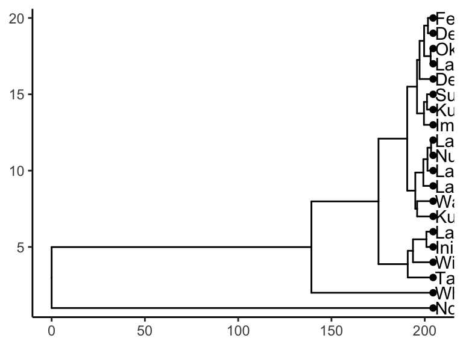

8 clustering
So far we have been looking at how to plot raw data, as well as data that has been summarize across samples. This is important stuff and very useful. However, we often have questions about how samples in our datasets relate to one another. For example: in the Alaska lakes dataset, which lake is most similar, chemically speaking, to Lake Narvakrak? Answering this requires calculating numeric distances between samples based on their chemical properties. For this, and other questions, we need to use matrix analyses. For this, we will use runMatrixAnalysis(), a function that is loaded into your R Session when you run the source() command.
Matrix analyses can be a bit difficult to set up. There are two things that we can do to help us with this: (i) we will use a template for runMatrixAnalysis() (see below) and (ii) it is critical that we think about our data in terms of samples and analytes. Let’s consider our Alaska lakes data set:
alaska_lake_data
## # A tibble: 220 × 7
## lake park water_temp pH element mg_per_L element_type
## <chr> <chr> <dbl> <dbl> <chr> <dbl> <chr>
## 1 Devil_Mountain_Lake BELA 6.46 7.69 C 3.4 bound
## 2 Devil_Mountain_Lake BELA 6.46 7.69 N 0.028 bound
## 3 Devil_Mountain_Lake BELA 6.46 7.69 P 0 bound
## 4 Devil_Mountain_Lake BELA 6.46 7.69 Cl 10.4 free
## 5 Devil_Mountain_Lake BELA 6.46 7.69 S 0.62 free
## 6 Devil_Mountain_Lake BELA 6.46 7.69 F 0.04 free
## 7 Devil_Mountain_Lake BELA 6.46 7.69 Br 0.02 free
## 8 Devil_Mountain_Lake BELA 6.46 7.69 Na 8.92 free
## 9 Devil_Mountain_Lake BELA 6.46 7.69 K 1.2 free
## 10 Devil_Mountain_Lake BELA 6.46 7.69 Ca 5.73 free
## # … with 210 more rowsWe can see that this dataset is comprised of measurements of various analytes (i.e. several chemical elements, as well as water_temp, and pH), in different samples (i.e. lakes). We need to tell the runMatrixAnalysis() function how each column relates to this samples and analytes structure. See the image below for an explanation.

With this in mind, let’s try out our template:
AK_lakes_clustered <- runMatrixAnalysis(
data = alaska_lake_data,
analysis = "hclust",
column_w_names_of_multiple_analytes = "element",
column_w_values_for_multiple_analytes = "mg_per_L",
columns_w_values_for_single_analyte = c("water_temp", "pH"),
columns_w_additional_analyte_info = "element_type",
columns_w_sample_ID_info = c("lake", "park")
)
## Analytes are all numeric and compatible with the analysis selected.
AK_lakes_clustered
## # A tibble: 39 × 25
## sample_unique_ID lake park parent node branch.length label isTip x
## <chr> <chr> <chr> <int> <int> <dbl> <chr> <lgl> <dbl>
## 1 Devil_Mountain_L… Devil_… BELA 33 1 7.25 Devil… TRUE 204.
## 2 Imuruk_Lake_BELA Imuruk… BELA 32 2 4.91 Imuru… TRUE 204.
## 3 Kuzitrin_Lake_BE… Kuzitr… BELA 36 3 3.27 Kuzit… TRUE 204.
## 4 Lava_Lake_BELA Lava_L… BELA 35 4 3.02 Lava_… TRUE 204.
## 5 North_Killeak_La… North_… BELA 21 5 204. North… TRUE 204.
## 6 White_Fish_Lake_… White_… BELA 22 6 65.2 White… TRUE 204.
## 7 Iniakuk_Lake_GAAR Iniaku… GAAR 29 7 3.60 Iniak… TRUE 204.
## 8 Kurupa_Lake_GAAR Kurupa… GAAR 31 8 8.57 Kurup… TRUE 204.
## 9 Lake_Matcharak_G… Lake_M… GAAR 29 9 3.60 Lake_… TRUE 204.
## 10 Lake_Selby_GAAR Lake_S… GAAR 30 10 5.24 Lake_… TRUE 204.
## # … with 29 more rows, and 16 more variables: y <dbl>, branch <dbl>,
## # angle <dbl>, water_temp <dbl>, pH <dbl>, C <dbl>, N <dbl>, P <dbl>,
## # Cl <dbl>, S <dbl>, F <dbl>, Br <dbl>, Na <dbl>, K <dbl>, Ca <dbl>, Mg <dbl>It works! Now we can plot our cluster diagram with a ggplot add-on called ggtree. We’ve seen that ggplot takes a “data” argument (i.e. ggplot(data = <some_data>) + geom_*() etc.). In contrast, ggtree takes an argument called tr, though if you’re using the runMatrixAnalysis() function, you can treat these two (data and tr) the same, so, use: ggtree(tr = <output_from_runMatrixAnalysis>) + geom_*() etc.
Note that ggtree also comes with several great new geoms: geom_tiplab() and geom_tippoint(). Let’s try those out:
library(ggtree)
AK_lakes_clustered %>%
ggtree() +
geom_tiplab() +
geom_tippoint() +
theme_classic()
Cool! Though that plot could use some tweaking… let’s try:
AK_lakes_clustered %>%
ggtree() +
geom_tiplab(aes(label = lake), offset = 10) +
geom_tippoint(shape = 21, aes(fill = park), size = 4) +
scale_x_continuous(limits = c(0,400))
Very nice!